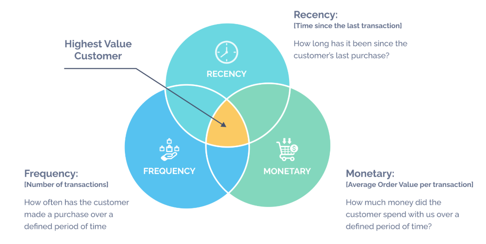

My Projects

Analyzing Industry 4.0 trends in NIFTY 200 Companies
Automated web scraping, processed 50GB+ data, analyzed Industry 4.0 trends, and developed a co-occurrence matrix to uncover technology adoption patterns.

Cohort Analysis - Customer Segmentation with RFM
A data-driven project leveraging cohort analysis and RFM segmentation to understand customer retention and identify key customer segments.

Predictive Analytics for Retail Banking
Developed predictive models to forecast customer response to marketing campaigns, determining the likelihood of subscribing to a term deposit.
Analyzing Mental Health Survey Data
An exploratory data analysis to identify correlations between various factors and depression in mental health survey data.
Exploring and Predicting NYC Taxi Trip Durations
Developed predictive models to estimate NYC taxi trip durations, analyzing factors like distance, time, and traffic conditions.
Restaurant Menu Analysis: Customer Preference Insights
Analyzed customer preferences to optimize restaurant menu, using insights to enhance pricing, promotions, and menu item performance.